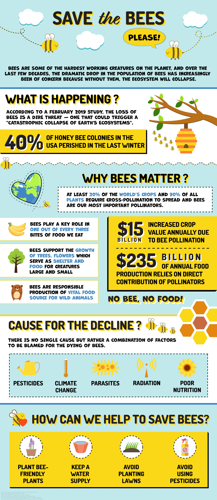
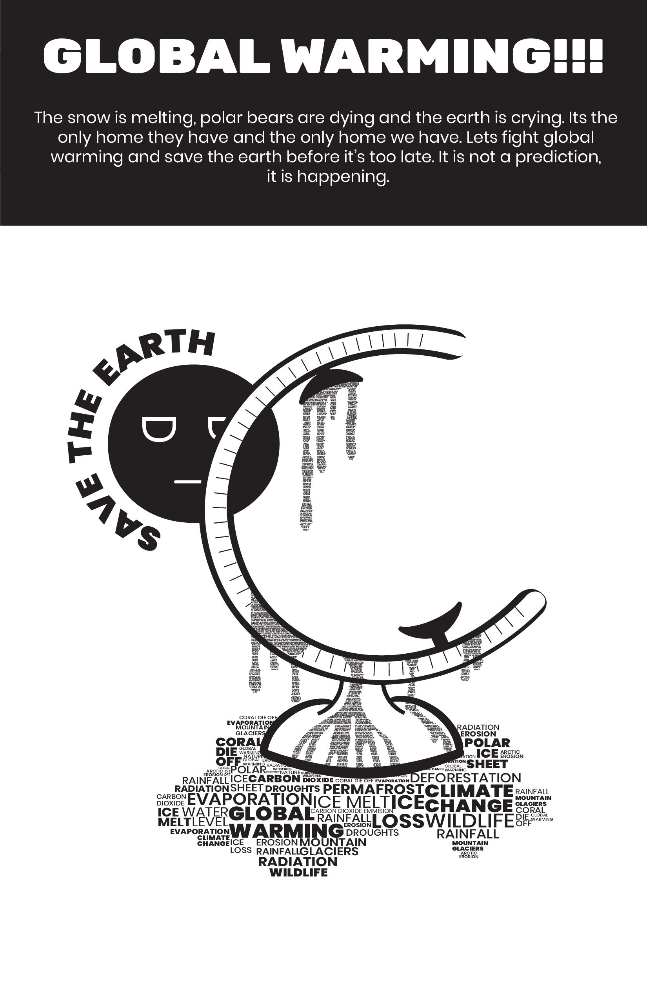
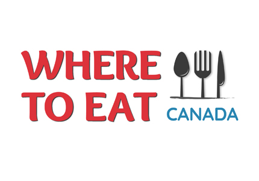

Welcome to my Graphic Design Page. Below is some of the work I have done in Graphic Design. I hope you like it!
My Role and Involvement: I had to create a poster based on a topic related to environment sustainabilty. My topic was based on the importance of bees. I used Adobe Illustrator to create this poster. Since this was an infographic, I collected all the facts first, then sketched the design based on the facts, created the assets and finally arranged everything by making the right use of colours and typography to draw focus on each section.
Date: July 2020
My Role and Involvement: I had to create a typographical poster based on a topic related to the environment. My topic was based on global warming. I used Adobe Illustrator to create this poster. Since this was a typographical poster, it had a small caveat. I was only allowed to use type glyphs for graphical representation, layout and design.
Date: March 2020
My Role and Involvement: Using Adobe Illustrator, I re-created a logo for 'Where To Eat Canada'. This was a part of the assignment where I had to redesign the layout of their website.
Date: February 2020
My Role and Involvement: Using Adobe Illustrator, I created a logo for an online based furniture company called 'Furnest'. I brainstormed a lot of concepts and finally designed two logos - final one and a variant.
Date: March 2019
My Role and Involvement: Using Adobe Illustrator, I created a logo for an online based lamp manufacturer company called 'Thakur Lamp Shades'. I brainstormed a lot of concepts and finally designed two logos - final one and a variant.
Date: May 2019
My Role and Involvement: Using Adobe Illustrator, I created a logo for an icecream company called 'Naturals'. I brainstormed a lot of concepts and finally designed two logos - final one and a variant.
Date: April 2019
My Role and Involvement: Using Adobe Illustrator, I created a logo for a bicycle sales and repair shop called 'Bike It Up'. I brainstormed a lot of concepts and finally designed a logo keeping typography and color theory in mind.
Date: March 2020
My Role and Involvement: Using Adobe Illustrator, I created a logo for an landscaping company called 'Ecobliss'. I brainstormed a lot of concepts and finally designed a logo keeping typography and color theory in mind.
Date: January 2020